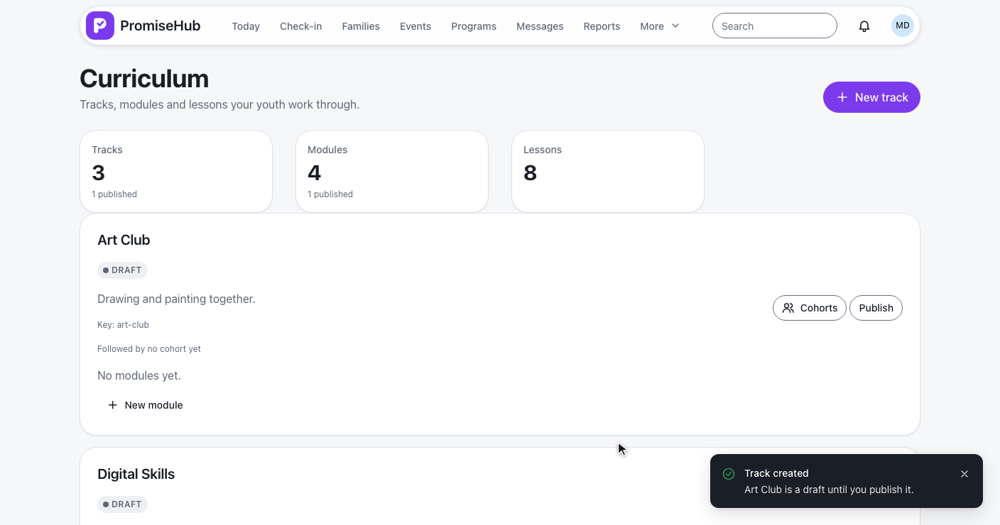
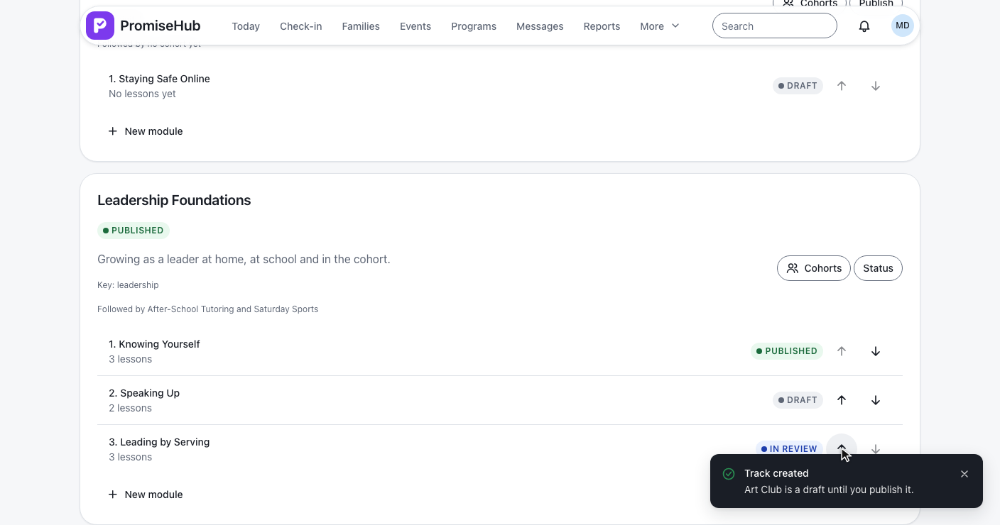
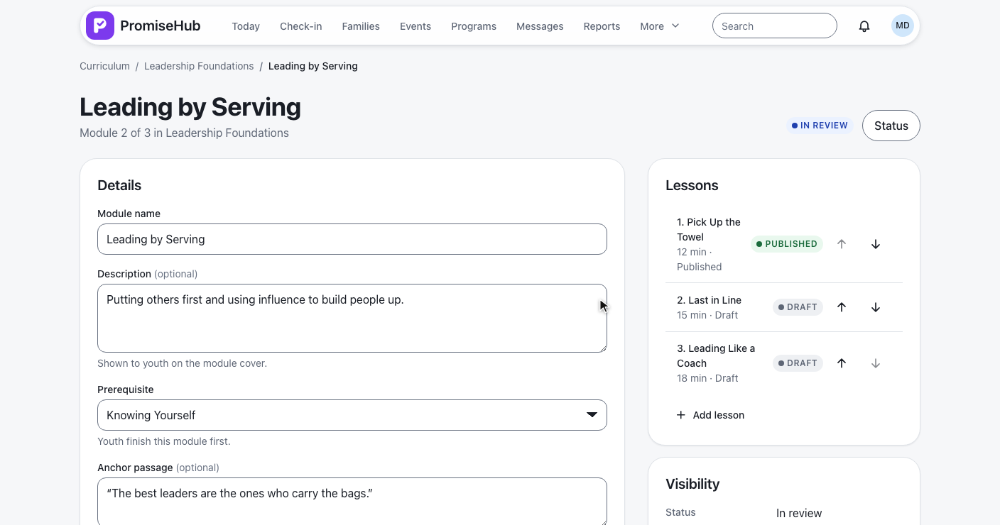
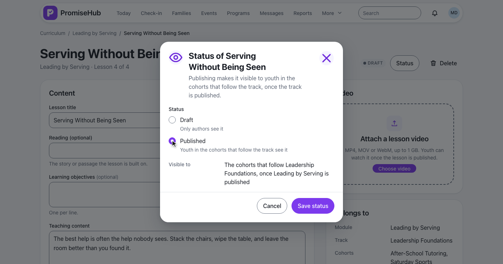
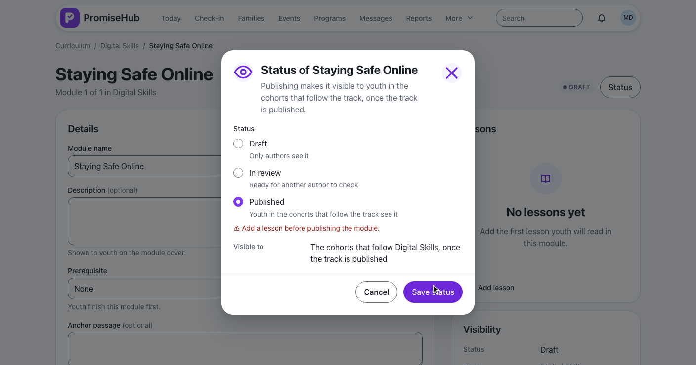
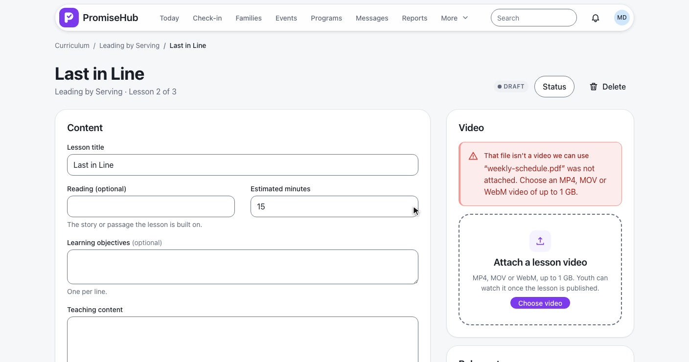
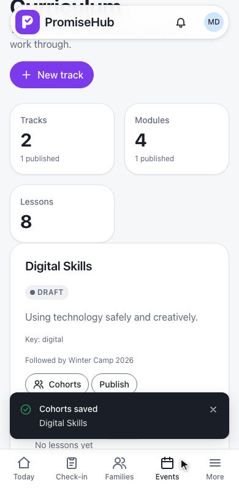
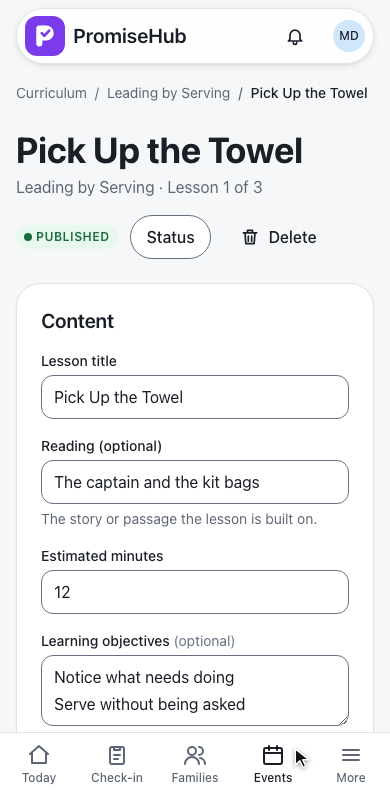
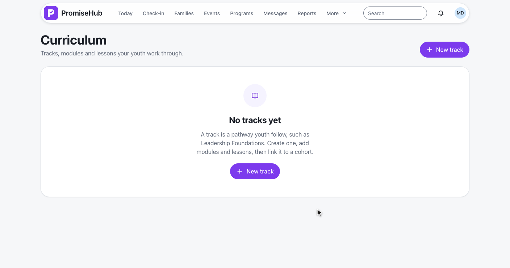

PromiseHub · Video 56
Author curriculum
Tracks, modules and lessons, draft to published, a lesson video, and the cohorts that follow
Tracks, modules and lessons, draft to published, a lesson video, and the cohorts that follow
GET /curriculum, POST /curriculum/tracks, PUT …/module-order.



POST /curriculum/lessons, PUT /curriculum/lessons/{id}, audited before and after.
| Item | Statuses | To publish |
|---|---|---|
| Track | Draft, Published | — |
| Module | Draft, In review, Published | At least one lesson |
| Lesson | Draft, Published | Teaching content |
Youth see a lesson only while lesson, module and track are published and their program follows the track · ADR 0050


POST /curriculum/lessons/{id}/video: refused, uploading, attached.
| Check | Accepted |
|---|---|
| Extension | .mp4, .mov, .webm |
| Content type | video/mp4, video/quicktime, video/webm |
| First bytes | ftyp or the WebM signature |
| Size | Up to 1 GB (Lessons:MaxVideoBytes) |

IFileStore · lessons/{organization}/{lesson}/{guid}.mp4 · LocalFileStore under Storage:RootPath
PUT /curriculum/tracks/{id}/cohorts: a program follows one track.


No tracks yet, Try again, and Learning off going to Today.
| Caller | Answer |
|---|---|
| Admin, program director | Their organization's curriculum |
| Site lead, youth worker, youth, mentor | 403 |
| Another organization's id | 404 |
| Learning off | 404, routes go to Today |

CurriculumTracksTests, CurriculumLessonsTests, CurriculumCohortsTests: rules, order, status, soft delete, roles, tenancy, Learning offLessonVideoTests and LocalFileStoreTests: types, signatures, size, replace, removee2e/tests/curriculum specs on phone and laptop, with axe and no sideways scroll
Next: youth complete lessons